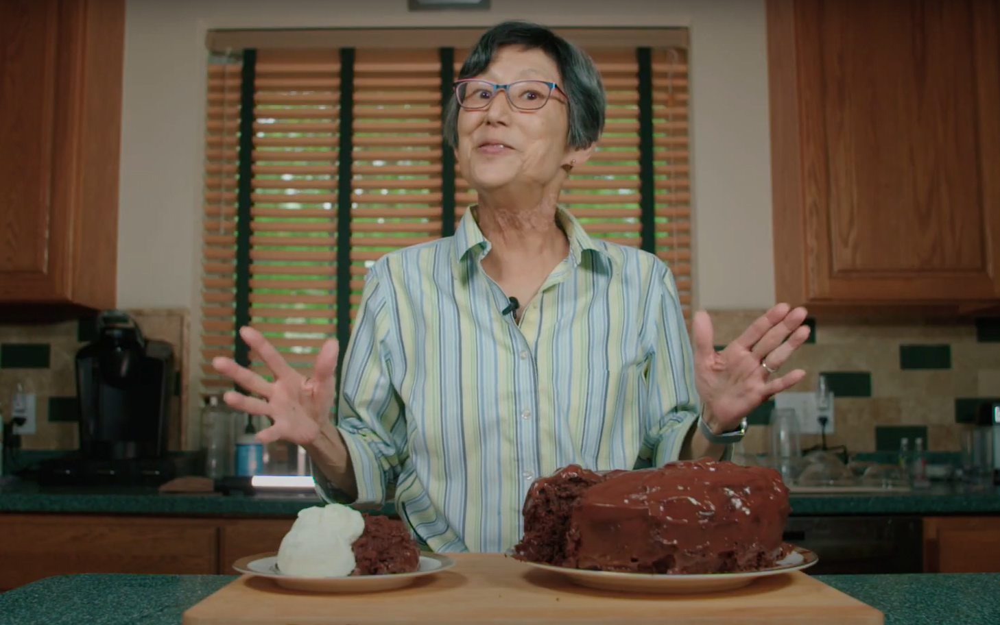
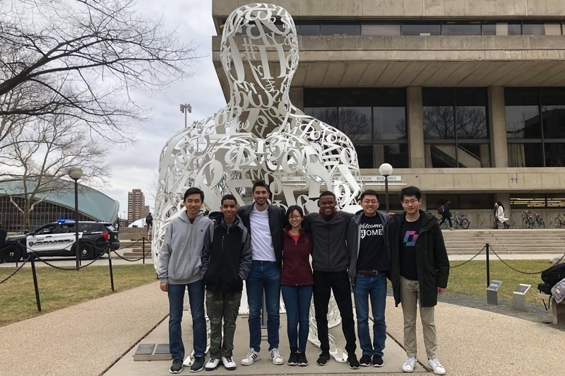

Alumni
Lynja Turns: Retired Engineer
Barbara (Padgett) Yawn
%20Yawn.jpeg)
Like many annual activities, this year’s MIT Mystery Hunt was completely virtual for the first time. Participating hunters needed to retrieve items sent into a parallel universe and bring them home. To do this, players wandered around in a massively multiplayer online (MMO) game in which MIT was rendered into a fantasy world that the organizing team began developing last spring. Says longtime participant Stephanie Howell, “It was amazing luck that Galactic Trendsetters were already working on an MMO of the campus before we realized how long social distancing was going to need to remain a policy. I’m honestly not sure if a hunt could have happened if the creating team had to change gears to something completely online. It certainly wouldn’t have been this well put together.”
Chess has a long history at MIT that began decades before 62 million households tuned in to Netflix’s miniseries “The Queen's Gambit.” Though the show ranked as Netflix’s No. 1 in 63 countries within its first month, and sparked a global surge in the sale of chess sets and books, several members of MIT’s chess club say, with a laugh, that they haven’t seen it yet. Tyrone Davis III, a junior computer science major, a U.S. National Chess Master, and the president of MIT’s chess club, says he plans to watch the miniseries eventually. For now, he says it’s been exciting to see growing public interest around the game he’s been playing since middle school. “The hardest thing about chess is the beginning stages,” Davis says. “Once you learn how the pieces move, then you can have fun. But that’s only after you go through the difficult beginning time of learning how everything works. I hope the show could help motivate people through those tough beginning stages, so they can actually start having fun.” A history of chess at MIT “The Queen's Gambit” was released on Netflix last October, and is based on a novel of the same name written in 1983 by Walter Tevis. The novel and television show follow a rising chess star named Beth during the 1950s and '60s, as she ascends from child prodigy to international success. During the same time period (in real life), artificial intelligence experts at MIT were shaping the future of chess. Throughout the early 1900s, scientists and chess players around the world dreamed of a chess-playing machine. In 1951, English computer scientist Dietrich Prinz successfully created one, but it was not powerful enough to play a complete game. Then, in 1958, an IBM programmer developed a much stronger chess-playing machine, but novice players could still easily beat it. The first computer to play chess “convincingly” was the Kotok-McCarthy computer program, developed by MIT students between 1959 and 1962. The students worked with John McCarthy, a computer scientist and cognitive scientist at MIT. In 1966, the Kotok-McCarthy program participated in and lost the first-ever chess match between two machines. The first chess program to ever be ranked and to win against a human during a tournament was also developed at MIT. The Mac Hack, as the program came to be called, was written by computer programmer Richard Greenblatt. As a student at MIT and an avid chess player, Greenblatt published his work in a 1967 paper entitled “The Greenblatt Chess Program.” Hubert Dreyfus, a prominent MIT professor of philosophy at the time, had previously noted the shortcomings of chess-playing machines. Then, he lost to the Greenblatt machine.